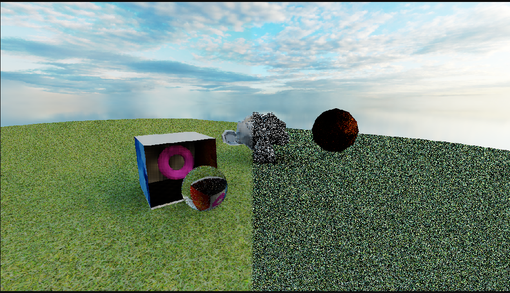
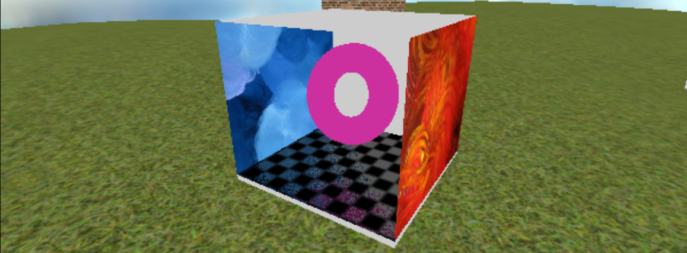
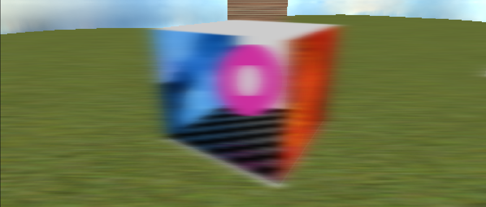
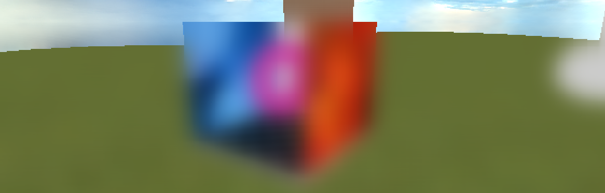
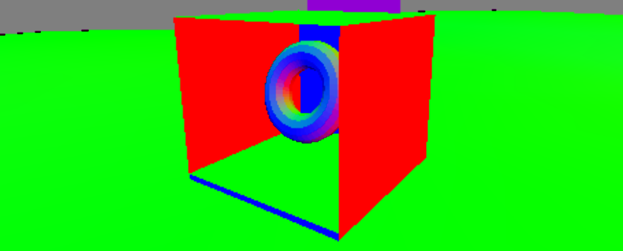
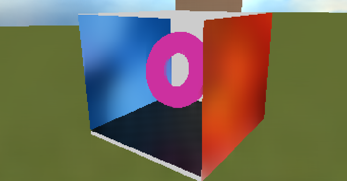
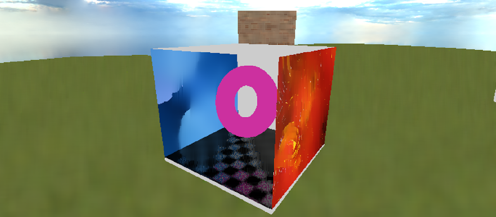

Jack Tollenaar
Jack Tollenaar
Idea
Real time Path/Raytracers give very noisy images which do not look nice. While there are currently significantly better techniques using for example machine learning, I will be discussing a much simpler way of denoising using a weighted gaussian blur.
Basic blurring
This technique relies on selectively blurring the noisy data, so let's start of with just blurring the whole screen.
For this example I will be using a 2 pass Gaussian blur where we first blur all the pixels horizontally and then vertically, for our case this is beneficial since later it will be harder to weight it correctly if we use a square kernel
For the first step we will loop over all the pixels in the image and average them with their horizontal neighbors. In this average we use a Gaussian distribution which creates a nicer blur than directly taking the average
This weight follows the standard Gaussian distribution which is calculated as

where x is the distance of the pixel and σ is the standard deviation which controls the spread of the blur
This is a pretty lengthy formula with a square root and exponentials so it is better to precalculate this and put it in a array
While I dont recommend calculating this at runtime an implementation of this formula in code would look something like this.
const float PI = 3.14159265;
const float sigma = 1.0; // This controls the spread of the Gaussian
const float weights[33];
for (int i = 0; i < 33; i++) { // In this case i is the distance used in the formula
// We can also write this as 1.0 / (sqrt(2.0*PI*sigma*sigma)) which is identical but slower to calculate
float coeff = 1.0 / (sqrt(2.0 * PI) * sigma);
float exponent = -(i * i) / (2.0 * sigma * sigma);
weights[i] = coeff * exp(exponent); // exp(x) does e^x
}
Now lets look at the code that would implement the actual blurring, I will be using a GLSL shader but you can use anything you like.
First we start of by blurring into one direction from the center of every pixel
const float weights[33] = float[](
0.0702, 0.0699, 0.0691, 0.0676, 0.0657, 0.0633, 0.0605, 0.0573,
0.0539, 0.0502, 0.0464, 0.0426, 0.0387, 0.0349, 0.0312, 0.0277,
0.0244, 0.0213, 0.0184, 0.0158, 0.0134, 0.0113, 0.0095, 0.0079,
0.0065, 0.0053, 0.0043, 0.0035, 0.0028, 0.0022, 0.0017, 0.0013, 0.0010
);
vec2 offset = 1.0 / vec2(resolutionX,resolutionY); // step in uv for moving 1 pixel
const int size = 32; // size of blur this should be weights size -1 (for the center pixel)
vec2 direction = vec2(1,0); // currently just horizontal
vec4 centerColor = texture(c, uv);
float totalWeight = 0.0;
vec3 totalColor = vec3(0.0);
//Loop over all the pixels in the +x direction
for(int i = 0; i <= size; i++) {
float weight = weights[i]; // Get our current weight
vec2 neigborUV = uv + direction*i*offset; // Get the uv coords
if (uv.x > 1.0 || uv.x < 0.0 || uv.y > 1.0 || uv.y < 0.0) break; // Dont sample outside of screen
totalColor += texture(c,neigborUV).xyz * weight; // Add neigbor color to total
totalWeight += weight; // Add weight to total
}
color = totalColor / totalWeight; // calculate average by dividing by the total weight used
This gets us a blurred image in one direction, then to get a full horizontal blur, we can just repeat the for loop in the negative direction
by replacing direction with the negative of direction
vec2 neigborUV = uv + -direction*i*offset; // Get the uv coords (negative)If you did it correctly you should get something like this:

⬆ Input | Output ⬇

To get the full blur you have to run the filter over the image twice switching the direction from horizontal to vertical
so:
vec2 direction = vec2(1,0); // currently just horizontalWould become
vec2 direction;
if(horizontal == true) direction = vec2(1,0); // in the second pass we set horizontal to false
else direction = vec2(0,1);You cant just add 4 for loops to the first pass since it wouldn't have the correct data to blur the image correctly.
So you need to draw this first horizontal blur to a texture and then blur it again, but vertically.
This gives us the full blur:

Weighing
While simply blurring gets rid of any noise that would be there it also gets rid of any coherent scene.
To get around this we need to weight our blur by more information.
The best candidate for this is information from the G-buffer (geometry buffer).
This includes scene normals, world positions and depth.
I will only be using the normals for this example but you will get better results by using a mixture
of them and tweaking their influence until it looks good.

As you can see big changes in normals give a good estimate of all the edges in our scene which we do
not want to blur.
So we will add a parameter to our function that weighs our blur by the change in normals:
const float edgeFallSpeed = 6.0; <changed>
vec4 centerColor = texture(c, uv);
float totalWeight = 0.0;
vec3 totalColor = vec3(0.0);
float edgeWeight = 1.0; <changed>
vec3 lastNormal; <changed>
//Loop over all the pixels in the positive direction
for(int i = 0; i <= size; i++) {
float weight = weights[i]; // Get our current weight
vec2 neigborUV = uv + direction*i*offset; // Get the uv coords
if (uv.x > 1.0 || uv.x < 0.0 || uv.y > 1.0 || uv.y < 0.0) break; // Dont sample outside of screen
vec3 normal = texture(N, neighbourUV).xyz; // Get the current normal <changed>
if (i != 0) {// at the center we have nothing to compare too so skip it <changed>
float diff = 1.0-dot(lastNormal, normal); // Get the difference with the normal of the last pixel <changed>
edgeWeight -= diff * edgeFallSpeed; <changed>
if (edgeWeight < 0.0) break; // stop sampling if we dont contribute anymore <changed>
weight *= edgeWeight; <changed>
} <changed>
lastNormal = normal;
totalColor += texture(c,neigborUV).xyz * weight; // Add neigbor color to total
totalWeight += weight;
}
color = totalColor / totalWeight;You can see here why we split the blurring into each direction separately, so that we can stop the blur separately in each direction.
This will make our blur stop at hard edges and blur less at steep changes which will make edges visible again.

Like mentioned before, you can improve this by adding more data for weighing, like the difference in depth or world position of a pixel
When applied to a noisy image it dramatically reduces noise

Choosing the right data
As keen eyed people might have noticed is that while this technique removes noise it also removes any
details like textures.
There are some ways to get around that.
One good solution is to weight the blurring by the difference in color, in my case the noise is mainly on the lighting causing the pixels to become brighter or darker. This means that the color changes a lot, but the hue of the color doesn't. We can check the difference in hue either by calculating the actual hue or as a simpler approach threat the color as a direction and check for the change in direction.
We can do this using the dot product
float colorDiff;
// Cant check black pixels so assume they are the same color
if(length(lastColor) < 0.001 || length(color) < 0.001) colorDiff = 0.0;
else
{
colorDiff = 1.0-abs(dot(normalize(lastColor),normalize(color))); // Get the difference in color (hue)
}
A better solution is to not blur your detailed textures at all. In most cases not all your data is noisy, in my case only the lighting data is noisy while the colors/textures of the frame aren't.
Because of this if you split your noisy data from your unnoisy data you can denoise only the noisy data and recombine it with the rest of the data to get a better final image